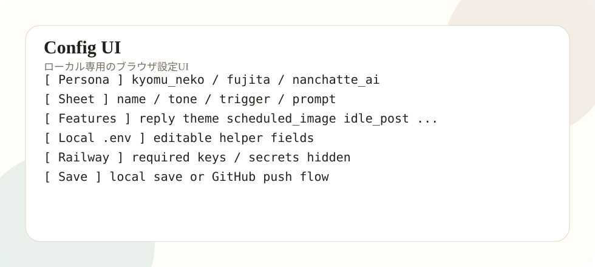

Config UIとは
cmd/configui は、人格設定をブラウザで編集するためのローカル専用UIです。PowerShellで日本語JSONを直接触ると文字化けしやすいため、フォームから編集できるようにしました。

主要コンフィグ項目
| キー | 意味 | 例・注意 |
|---|---|---|
| PERSONA | 使用する人格キー。 | kyomu_neko / fujita / nanchatte_ai |
| PERSONA_PATH | 人格シートのパス。 | personas/kyomu_neko/persona.json |
| IMAGE_REF_DIR | 画像参照素材の場所。 | assets/kyomu_neko/refs |
| MIXI2_CLIENT_ID | mixi2 PluginのClient ID。 | 公開資料では実値を出さない。 |
| MIXI2_CLIENT_SECRET | mixi2 PluginのClient Secret。 | Railwayで実値。空欄上書き禁止。 |
| MIXI2_COMMUNITY_ID | 対象コミュニティID。 | Pluginごとに違う。 |
| OPENAI_API_KEY | OpenAI APIキー。 | Railwayで実値。公開禁止。 |
| OPENAI_MODEL | テキスト生成モデル。 | コストと品質で調整。 |
| OPENAI_IMAGE_ENABLED | 画像生成の有効/無効。 | falseなら画像生成しない。 |
| FEATURES | 有効機能一覧。 | reply,theme,... |
| SCHEDULED_POST_TIMES | 定時投稿時刻。 | 07:15,12:15,19:15 |
| IDLE_POST_TIMES | 静寂投稿候補時刻。 | 10:30,15:30,21:30 |
| EVENT_LOG_PATH | イベントログ保存先。 | /data/logs/events.jsonl |
| REPLIED_LOG_PATH | 返信済みID保存先。 | /data/logs/replied_post_ids.txt |
| USER_PREFS_PATH | 呼称などの保存先。 | /data/state/user_prefs.json |
| APP_ENV | 実行環境。 | production |
| LOG_LEVEL | ログレベル。 | info |
Secret空欄上書き事故
MIXI2_CLIENT_SECRET="" や OPENAI_API_KEY="" をRailwayに貼ると、実値が空で上書きされます。テンプレには実値を書かず、Railway画面で直接入力します。
MIXI2_CLIENT_SECRET="<Railwayで実値を設定>"
OPENAI_API_KEY="<Railwayで実値を設定>"